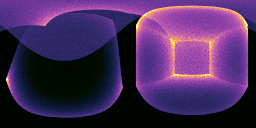
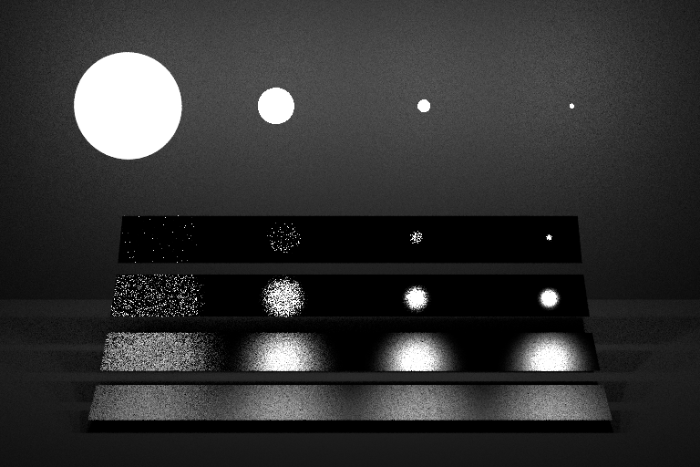
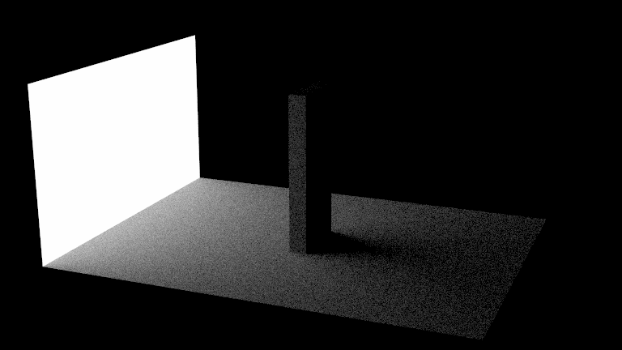
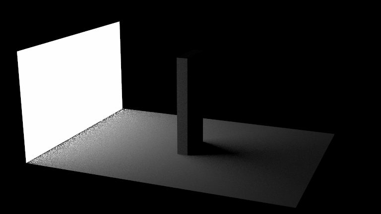
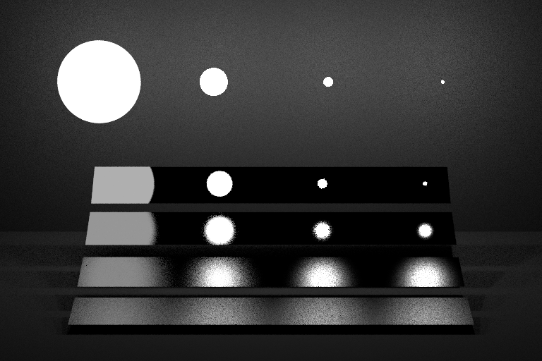
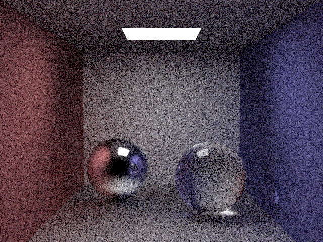
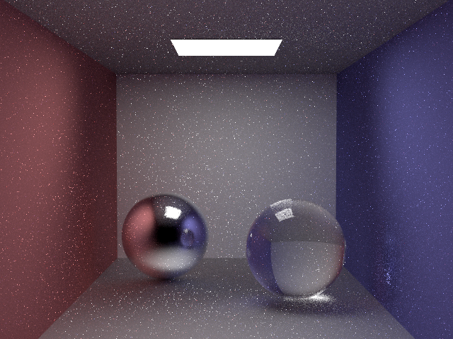
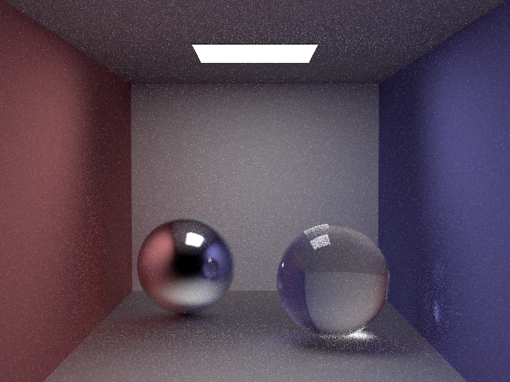

**Assignment 5**
Student name: XXXX
Netid: YYYY
(##) Task 1: Sampling Geometry
(##) Task 2: Making Lights Sampleable
Rectangles
Triangles
Spheres
Surface Groups










Full Path Tracing


